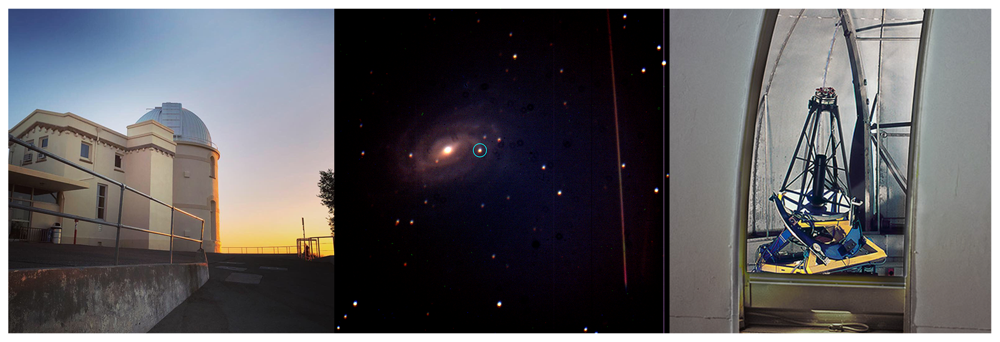

Observational Astronomy - Filippenko Research Group
 As a member of the Filippenko Research Group at UC Berkeley I am responsible for monthly observing runs with the Nickel 1m telescope at Lick Observatory. On these observing runs we do follow-up observations on recent supernovae, transient objects, and globular clusters. I am also a member of the Zwicky Transient Facility checking team which identifies potential supernovae to do follow up studies on. In this research group my primary project has been to help develop a software package known as astroPIPS which is a Period Identification and Pipeline Suite for detecting periods of variable objects such as RR Lyrae Variable Stars, Cepheid Variable Stars, and potentially exoplanets. My role was to implement stellar parameter estimation models for RRab and RRc type variable stars. With the multi-term Fourier fitting to a folded light curve we can estimate stellar properties using empirically derived models. This software package is openly available now at pypi.org/project/astroPIPS/. Our project is currently observing variable stars in the M3 globular cluster to investigate Oosterhoff Types and better understand the evolutionary path of variable stars. In this project I have begun making use of the 1D MHD stellar simulation code MESA to simulate RR Lyrae light curves which we can compare to observed data which may allow us to investigate the effects of metallicity in RR Lyraes further than ever before.We presented a study of variable stars in the globular cluster known as M3 in this iPoster which also won the Chambliss Award for best presentation at the 238th AAS Meeting:
Recently the group has begun participating in the race for discovering Kilonovae (BNS and BHNS mergers). We are constantly on the look out for new gravitational wave events from the LIGO & VIRGO gravitational wave observatories. One of our goals is to discover optical counterparts for a binary neutron star mergers or a neutron star-black hole mergers. Finding these optical counterparts would allow the group to recalibrate the Hubble constant and help address the Hubble tension in the scientific community. I am currently being trained to operate the Shane Telescope (3-meter) at Lick as well. This training requires extensive knowledge of how to utilize the Kast Double Spectrograph instrument for taking spectroscopic data of supernovae and other target objects.